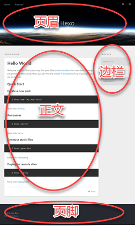

在 《Hexo 你的专属博客》 一文中，你了解到了如何搭建 Hexo 博客站点并部署到远程仓库，实现了博文源码及站点配置的备份，并且还探讨了如何在多个设备上同步博客站点。
本文主要包括两方面的内容，首先是了解 Hexo 中与写作的相关事项和概念，其次是介绍如何利用 Visual Studio Code 来打造一个专注无干扰的 Markdown 写作环境。读完本文，你就可以做到心无挂碍、高效流畅地撰写你的博文了。
Hexo 的常规写作方式
现在，先来了解一下 Hexo 的常规写作方式，顺便了解 Hexo 的一些非常重要的概念。
按 Hexo 官方文档 的说明，创建新博文的命令如下：
$ hexo new [layout] <title> |
运行这个命令，即可为新博文创建一个 Markdown（.md）文件。并且，若此时启动 Hexo 本地服务器，也可看到博文已经添加到站点中了。这个命令有两个选项：
layout：为新博文指定布局，未指定时默认采用 post 布局。其余两个布局选项分别是 draft 和 page。title：指定新博文的文件名，同时也是新博文在页面上最初显示的标题。若指定的标题中包含空格，则必须包围在一对半角双引号中（建议总是加上双引号，省心）。标题也可以是中文，不过英文的文件名兼容性更好。此外，Hexo 会自动将文件名中的下划线（_）自动更改为连字符（-）。
关于 Hexo 的布局
所谓的 布局（layout），就是博文最终呈现出来的外观排版。如下图所示，你在每篇博文中输入的内容，将被 “嵌入” 到最终页面的 “正文” 位置。而正文之外的其它内容，如页眉、页脚及边栏等，则由 Hexo 根据你指定的布局及站点主题自动生成。

某种布局最终呈现出来的版面外观效果，由当前主题的 layout 文件夹中的同名 .ejs 文件定义。在生成最终的静态页面时，Hexo 会自动把每一篇博文 “嵌入” 到相应的 .ejs 布局中——_posts 中的博文嵌入 post.ejs 布局，_drafts 中的博文嵌入 draft.ejs 布局，而 page 博文则采用了 page.ejs 布局。
当然，最终的版面效果取决于你使用的主题。不同的主题定义了不同内容的 .ejs 文件集，而你的博文，总是 “一如既往” 地嵌入到相应的布局中的某个位置。这，也是你能够随心所欲地切换站点主题的原因。
作为测试，运行 hexo n "test" 命令创建一篇博文，观察 Hexo 自动在 source\_post 文件夹中生成名为 test.md 的文件。启动 Hexo 服务器并在浏览器中查看本地站点和博文，观察并体会博文与其它布局元素之间的关系。
关于 Hexo 的模板
在你的编辑器中打开刚刚生成的 test.md 文件，可发现文件中已包含如下内容：
|
两个 --- 及它们之间的内容，就是所谓的 front matter，用于保存关于博文的元数据。除博文标题及创建时间外，还可以在这里指定博文的标签、类别、关键字等等。完整的 front matter 参数及用途，请参阅 Hexo 文档。
这些 front matter 源自于 Hexo 的模板。在创建博文时，Hexo 将根据你指定的 layout，自动对博文应用 scaffolds 文件夹中的相应模板。由于刚才创建博文时采用了默认的 post 布局，因此 Hexo 将自动套用 scaffolds\post.md 模板来生成 test.md。
在编辑器中打开 scaffolds\post.md 模板，可发现其中包含与 test.md 中对应的 front matter。当然，双花括号之间的 title 和 date，已被自动替换为新博文的标题和创建时间：
|
Hexo 的默认模板比较简陋，你可以根据实际需要在模板中增加常用的元数据，如更新时间、类别及关键字等，以便在今后创建博文时，自动生成更完整的 front matter。例如：
|
回到 test.md，把 front matter 中双花括号中的 title 修改为 博文测试，并在后一个 --- 之后随便输入一些内容作为博文的正文。告一段落后，在浏览器中刷新博客站点，可发现新博文的标题和内容也随着更新了。可见，Hexo 服务器能够自动监视博文内容的改变，并且无需重启。
提示：博文的页面标题不必总是与文件名保持一致。随着你撰写越来越多的博文，你会发现现实中往往如此。即使是 Hexo 默认提供的 “Hello World” 博文，其文件名也是不一致的 “hello-world.md”。
关于标签和类别
当你的博文数量越来越多的时候，你或你的读者要怎样才能快速找到想要阅读的博文呢？Hexo 通过标签和类别提供了两种归类和检索博文的方式。
标签通常是从博文内容提炼的一个或多个关键词。你可以在 front matter 的 tags: 节点中，按如下方式为每一篇博文指定一个或多个标签：
# 若只有单个标签，则在同一行中指定（注意冒号后有一个空格） |
指定标签后，刷新站点页面，即可在侧边栏看到 “标签” 栏目。单击该栏目中的某个标签，将列出所有含有该标签的博文的链接；单击任一链接，即可打开并阅读相应的博文。
除标签外，你还可以从另一维度给你的博文分类。在 front matter 中增加 categories: 节点，并指定博文所属的一个或多个类别。同样，刷新站点可马上看到 “分类” 栏目：
# 若只有单个类别，则在同一行中指定（注意冒号后有一个空格） |
需要注意的是，与多个标签并无主次之分不同，多个类别间具有层级关系。首先列出的类别为一级类别，后续列出的类别依次为其前面类别之下的子类别。以上面的多类别设置为例，页面上将把 “Hexo” 类别缩进显示在 “实用工具” 类别之下，表示 “Hexo” 是 “实用工具” 中的一个子类别。
提示：不同的主题，可能采用不同的方式来呈现类别，例如，Hueman 主题将以菜单的形式来显示类别。
关于 draft 和 page
前面提到，创建新博文时，还可以选择 draft 和 page 布局。难道，除了写博文之外，你还需要写别的什么吗？
是的。你还可以使用 draft 布局来创建草稿或不想公开发表的博文，而 page 布局则可为你的博客站点增加功能性的页面。
实际上，新建博文命令的 layout 参数也决定了新生成的博文的存放位置。采用 post 布局的博文文件将自动存放到 source\_posts 文件夹中，draft 博文存入 source\_drafts 文件夹，而 page 页面则直接存放在 source 文件夹中。
假设你突然产生了一个想法，但还不够成熟，也暂时没时间将其写成正式的博文，那么，你可以用 hexo n draft "my-idea" 来创建一篇草稿，并在其中快速且粗略地记下这个想法。当然，你也可以利用这个草稿来收集相关的资料。
提示：如果你跟我一样，希望每次新建博文都从草稿开始，则可在站点配置文件中，把
default_layout设置为draft。这样运行hexo n "<filename>"命令就将直接创建草稿，而不是正式的博文。
默认时 Hexo 不会在站点中显示草稿，也不会在远程仓库中公开发布（放心，只是没有公开发布到 master 分支而已，草稿的源码依然会备份到 src 分支）。在逐步润饰完善草稿的过程中，如果你想要预览草稿的效果，只需在启动 Hexo 服务器时加上 --drafts 参数，如 hexo s --drafts，即可让本地站点同时显示出所有草稿和博文。
最后，当你打算把草稿发布为正式的博文时，运行 hexo publish "<filename>" 命令来把把指定的草稿从 source\_drafts 中转移到 source\_posts 中，并自动填写发布时间。从这时候起，这篇草稿就会像普通的博文一样公开发布了。
警告：不要把站点配置中的
render_drafts设置为true，这将导致所有草稿也被公开发布，除非你想公开尚未完成的或隐私的博文。
至于使用 page 布局来生成功能性页面方面，给站点添加 “关于我” 的页面，就是一个很好的例子。运行如下命令来创建自我介绍页面：
hexo n page "about" |
Hexo 自动在 source 文件夹中生成 about\index.md 文件。在编辑器中打开该文件，并输入你的简介，完成后保存。然后，打开主题配置文件（例如themes\landscape\_config.yml），并在 menu 中添加 About: /about 菜单。如下：
menu: |
现在，你已经掌握了 Hexo 中与博文相关的基本概念了。遵循简洁轻便低入侵性的 Markdown 语法，你可以开始 “专注无干扰” 地撰写你的博文了。
提示：Markdown 是一种轻量级的纯文本标记语言，只需输入少量标记，即可生成格式优美的印刷级排版。如果你还不了解 Markdown，可参考 Markdown 快速入门。
用 Visual Studio Code 撰写博文
专注无干扰？没错，Markdown 语法本身的确简洁流畅，但在创建、编辑和预览博文的过程中，既要运行 Git Bash 并输入命令，又要在文本编辑器中一层层寻找并打开文件，还是会时不时打断写作思路的。
说得好！你已经想到了，但你还不知道，你需要使用 Visual Studio Code。
Visual Studio Code（后称 VS Code）是微软出品的一个跨平台、轻量级且功能强大的代码编辑器，原生支持 JavaScript、TypeScript 及 Node.js，并且可通过扩展（即插件）来支持 C++、C#、Java 及 Python 等几乎所有语言，当然也包括你在 Hexo 中撰写博文所使用的 Markdown 语言。VS Code 一经推出即好评如潮，是文本或代码编辑器的不二之选。
提示：访问 VS Code 官方站点 来获取更多相关信息。
近年来，各种各样的 Markdown 编辑器层出不穷，在线的离线的都有。在我们的情形中，VS Code 之所以能够脱颖而出，是因为 VS Code 在界面中集成了一个终端，默认配置为使用 Windows PowerShell。在这个集成终端中，你可以输入并执行任何命令，无论是你已渐渐熟悉的 hexo 命令、还是 git 命令，以及 Node.js 的 npm 命令，都可以信手拈来。
提示：如果你希望使用其它终端（比如 Git Bash），则可在 VS Code 中按下 F1 键打开 “命令面板”，输入
Select Default Shell后回车，然后从清单中选择 Git Bash 即可。
有了这个多才多艺的 VS Code，你就可以进入真正 “专注无干扰” 地撰写博文的禅境了。
进入写作禅境
启动 VS Code，选择 文件 | 打开文件夹 打开你的博客站点文件夹。
按下 Ctrl+` 激活 VS Code 下方的 “终端” 面板，输入 hexo n "myblog" 并回车。片刻之后，source\_posts 中就生成了 myblog.md 文件。
提示：你应该已经了解到，几乎所有的 Hexo 命令都有对应的简化版本，例如
hexo n相当于hexo new、hexo s相当于hexo server等等。关于完整的 Hexo 命令清单，请参阅 Hexo 文档。
按下 Ctrl+P 激活 VS Code 的 “快速打开” 面板，并输入刚刚创建的文件名 myblog，从弹出的清单中选择 “myblog.md source\_posts” 并回车，VS Code 随即在编辑器窗口中打开这个文件。
接下来，想必你已经知道了，不外乎就是像平常一样修改 front matter，遵循 Markdown 规则来撰写你的博文了。
如果想预览博文，可按下 Ctrl+K, V 打开 VS Code 自带的 Markdown 预览窗口。当然了，你在这里看到的，只是博文本身内容的预览。
如果想预览整体效果，可激活终端并执行 hexo s -o，启动 Hexo 本地服务器并自动在默认浏览器中打开博客站点（这是 -o 选项的效果）。
提示：启动 Hexo 服务器后，当前的终端就被占用了。如果需要执行其它命令，同时又不想按下 Ctrl+C 来关闭 Hexo 服务器，则可按下 Ctrl+Shift+` 来打开一个新的集成终端（终端面板右上角的下拉列表，可用来在不同的终端间切换）。
你可能已经注意到了，到现在为止，你的手还没有离开过键盘！
在 VS Code 中，一切都在你的指尖。大多数情况下，你都不用中止输入，不必腾出手来抓住鼠标到处寻找和点击——这不但影响了你的效率，也干扰了你的思路。
如果你足够细心的话，你会发现 VS Code 侧边栏的 “源代码管理” 图标上，叠加了一个带有数字的圆点。这意味着 VS Code 内置的 Git 检测到了当前站点与远程仓库之间存在未同步的内容。不过，远程仓库的管理和站点的部署，仍然必须使用 Hexo 的 deploy 命令。因为，在部署到远程仓库之前，Hexo 还执行了大量的操作，包括博文内容与布局的合成，以及生成最终的静态 HTML 文件等。
当你完成了新博文的编辑，或者是修改了站点的配置之后，就可以执行一次清理，并通过部署来发表博文和备份站点。依然是激活集成终端，然后输入并执行如下命令——你还是不用离开键盘：
$ hexo clean |
至此，你已渐渐进入撰写博文的禅境。一切纷扰离你而去，万籁俱寂之中，你正全神贯注、心无旁骛地让你的思想和见解，静静地经由你的指尖流淌出来……
继续扫清障碍
你已经能够专注无干扰地撰写博文了。不过，前行的路上，多少还有一些小障碍需要克服。在 Markdown 方面，VS Code 扩展市场中存在若干插件，适当的利用可进一步提高你的写作效率和质量。
markdownlint
markdownlint 是一个 Markdown 语法检查器。博文中不符合 Markdown 规范的内容将被标上波浪线，并提供相应的改进提示。这个扩展可确保你的博文具有更高的兼容性（可由 Hexo 之外的其它 Markdown 解析器顺利读取），同时也可帮助你形成规范的语法习惯。
提示：按下 Ctrl+Shift+X 在侧边栏打开 “扩展” 面板，输入扩展名称即可自动执行搜索，找到所需扩展后，单击其右下角的 “安装” 按钮并耐心等待。安装完成后出现 “重新加载” 按钮，单击即可让新安装的扩展马上生效。
Markdown Shortcuts
顾名思义，这个扩展为 VS Code 提供了一组插入 Markdown 标记的快捷键。尽管 Markdown 与 HTML 相比已非常简洁，但插入链接（[a hyperlink](www.example.org)）或图像（）的标记仍然颇为复杂，尤其是在使用中文输入法时，时常会因忘记切换全角半角标点符号而反复犯错，极大地影响了输入的流畅性。安装此扩展后，只需：
- 按下 Ctrl+L，然后，若已选定了链接文本，则直接粘贴事先复制好的目标URL；否则填入链接文本后再粘贴URL。
- 要插入 Markdown 图像标记，可使用 Ctrl+Shift+L 快捷键。更多信息，靖参阅该扩展主页上的 “详细信息”。
提示：如果你使用 Chrome 浏览器的话，也可考虑使用名为 copy-as-markdown 的浏览器扩展，来直接从浏览器上获取 Markdown 格式的链接。
Hexo 在图像路径解析方面似乎存在问题，在 VS Code 预览中正常显示的图像，往往无法显示在远程发布后的页面上，反之亦然。一种比较简明的解决方法是：把所有图片放入 source\imgs 文件夹中，在站点配置文件中设置 permalink: :title/，同时在博文中以 ../imgs/example.png 的形式引用图像。这样，预览和发布的博文就都可以正确显示图像了。
VS Code-pangu
这是一个非常简单的插件，用于在中文和英文字符之间插入一个空格，让最终的排版结果更美观。安装 VS Code-pangu 后，只需按下 F1、输入 Why not add a space... 并回车，即可给全文或选定的内容自动插入空格。
Hexo 也有一个可以自动插入空格的插件 hexo-filter-auto-spacing，安装该插件后再在站点配置文件中设置 auto_spacing: true 即可使用。
不过，并非所有的中英文之间都适合插入空格，例如加粗的中文 **提示** ，自动插入空格后，最终的输出会变成 ** 提示 **，失去加粗效果。因此，使用 VS Code-pangu 的可控性更好，可以在编辑器中更正不适当插入的空格。
注意：如果一次性在全文中插入了空格，则应在发布前进行检查，并删除掉意外插入的不必要的空格。
Markdown Preview Enhanced
改善了 VS Code 的 Markdown 预览，可显示博文目录方便导航，并支持输出 HTML、PDF、eBook 等格式。
Hexo tag snippets
除标准的 Markdown 标记外，博文中也可以使用 Hexo 的 自定义标记。例如，下面的标记，可用于在博文中插入站内博文链接：
{% post_link slug [title] %} |
不过，要注意这些标签只有在 Hexo 才能正确解析，其它 Markdown 解析器很可能无法解析这些标记（实际上，VS Code 的预览就无法解析这些标记），因此应尽量慎用。
如果确实需要使用 Hexo 标记，你可以安装名为 Hexo tag snippets 的 VS Code 扩展。该扩展把 Hexo 标记定义为代码片段，只需简短的输入几个字符，就可快速输入这些标记。例如，输入 hcb 并选择 “Code Block - General (Hexo tag snippets)”，可快速插入如下的代码块标记：
{% codeblock title lang:language %} |
默认时，VS Code 并未启用 Markdown 的智能感知。要在撰写博文时使用代码片段的功能，需要添加如下用户配置：
"[markdown]": { |
提示：对于 Markdown 来说，智能感知有利有弊。若感觉你的写作受到影响，并且你的博文内容只需要少量 Hexo 标记，则不要启用该功能。
此外，你还可以在 VS Code 中定义你自己的代码片段。选择 文件 | 首选项 | 用户代码片段，打开 markdown.json 并输入如下内容，就可以使用 hxpl 和 hxrm 来快速插入站内博文链接和博文摘要的代码片段了：
"hexo post link": { |
以上内容说明，除集成终端外，VS Code 强大的扩展能力，是又一个让它完胜其它 Markdown 编辑器的特性。扩展的可能性是无穷的，并且会随着时间的推移和社区的反馈而越来越好用。甚至，有必要的话，你还可以编写你自己的扩展。
尾声
经过一番跋涉，你终于达到了撰写博文的新境界。放松下来后，你可能会觉得 Hexo 的默认主题有些乏味。
如果想要以全新的面貌来呈现你的博文，可访问 Hexo 官方网站的主题页面，找到你喜欢的主题，并按其说明把主题下载（通常是使用 git clone 命令）到 themes 文件夹中；然后在站点配置文件中，把 theme: landscape 中的 landscape 修改为新主题的名称。
大多数主题在其自身文件夹中提供了 _config.yml 配置文件。利用这个主题配置文件，可以对主题的各种细节进行设置和调整。
本篇到此为止，享受你的写作吧！